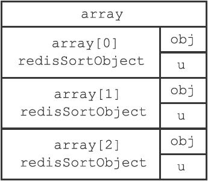
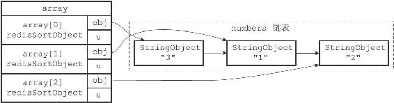
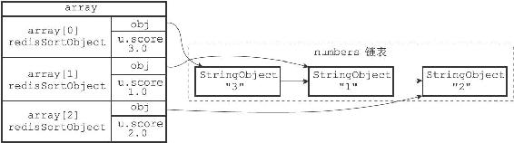
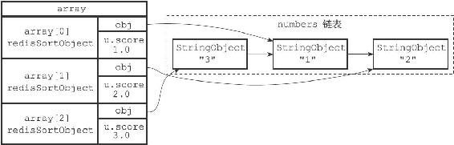

21.1 SORT
SORT命令的最简单执行形式为：
SORT
这个命令可以对一个包含数字值的键key进行排序。
以下示例展示了如何使用SORT命令对一个包含三个数字值的列表键进行排序：
redis> RPUSH numbers 3 1 2
(integer) 3
redis> SORT numbers
1) "1"
2) "2"
3) "3"
服务器执行SORT numbers命令的详细步骤如下：
1）创建一个和numbers列表长度相同的数组，该数组的每个项都是一个redis.h/redisSortObject结构，如图21-1所示。

图21-1 命令为排序numbers列表而创建的数组
2）遍历数组，将各个数组项的obj指针分别指向numbers列表的各个项，构成obj指针和列表项之间的一对一关系，如图21-2所示。
3）遍历数组，将各个obj指针所指向的列表项转换成一个double类型的浮点数，并将这个浮点数保存在相应数组项的u.score属性里面，如图21-3所示。
4）根据数组项u.score属性的值，对数组进行数字值排序，排序后的数组项按u.score属性的值从小到大排列，如图21-4所示。
5）遍历数组，将各个数组项的obj指针所指向的列表项作为排序结果返回给客户端，程序首先访问数组的索引0，返回u.score值为1.0的列表项"1"；然后访问数组的索引1，返回u.score值为2.0的列表项"2"；最后访问数组的索引2，返回u.score值为3.0的列表项"3"。
其他SORT

图21-2 将obj指针指向列表的各个项

图21-3 设置数组项的u.score属性

图21-4 排序后的数组
以下是redisSortObject结构的完整定义：
typedef struct _redisSortObject {
//
被排序键的值
robj *obj;
//
权重
union {
//
排序数字值时使用
double score;
//
排序带有BY
选项的字符串值时使用
robj *cmpobj;
} u;
} redisSortObject;
SORT命令为每个被排序的键都创建一个与键长度相同的数组，数组的每个项都是一个redisSortObject结构，根据SORT命令使用的选项不同，程序使用redisSortObject结构的方式也不同，稍后介绍SORT命令的各种选项时我们会看到这一点。